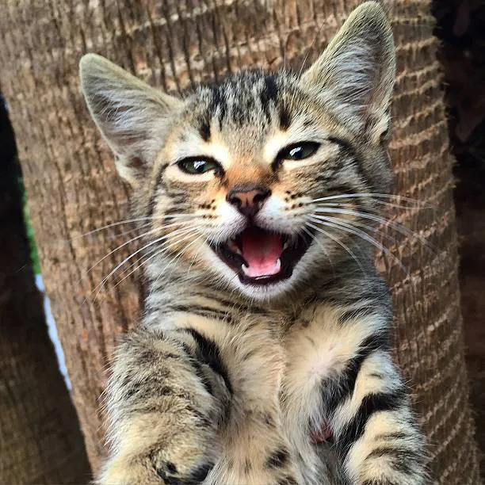

Son los animales de compañìa que la mayorìa se creen ariscos, pero en realidad son muy mimados. Tienen ciertos comportamientos que se pueden entender a través de las orejas de ya que indican su estado emocional y nivel de alerta:
Las emociones hacen que tu gato sienta el impulso de actuar en respuesta ante una situación, además de definir cómo se siente una vez que ha reaccionado. Por ejemplo, la emoción negativa o adversa del miedo puede llevar a tu gato a defenderse, mientras que las sensaciones positivas que siente cuando lo acaricias puede ayudarlo a ser más sociable.
Aquì hay una lista de algunas razas felinas, sin embargo hay cerca de 100 razas que se califican en 5 categorìas
| Persas y exòticos | esplendoroso pelaje y por su actitud y comportamiento |
|---|---|
| Pelo ondulado/rizado | mutaciones en la estructura de su pelaje. razas como Selkirk rex; LaPerm |
| Pelo largo/semilargo | muy demandados y alabados por su espectacular belleza, con un pelaje sublime, suelen parecer más grandes de lo que son realmente. raza considerada la mas antigua es Aphrodite Chipre |
| Pelo corto | más numerosa y diversa. Su pelaje no requiere de nuestra atención, ellos solos se lo cuidan a la perfección. Destaca la raza Bengalì |
| Orientales y siameses | musculatura fuerte y una estructura estilizada. Elegante y ágil pero de huesos finos. Se diferencian por el color de sus ojos (azules) y por su pelaje sin marcas |
Si buscas un michi dejarè una pequeña lista de lugares de adopciòn :) (con sus respectivos links)
Se considera mejor adoptar, ya que a veces los animales son rescatados de la calle o de lugares donde los maltrtan. Siempre estàn buscando un hogar. Puedes llenar el formulario si quieres màs informaciòn.